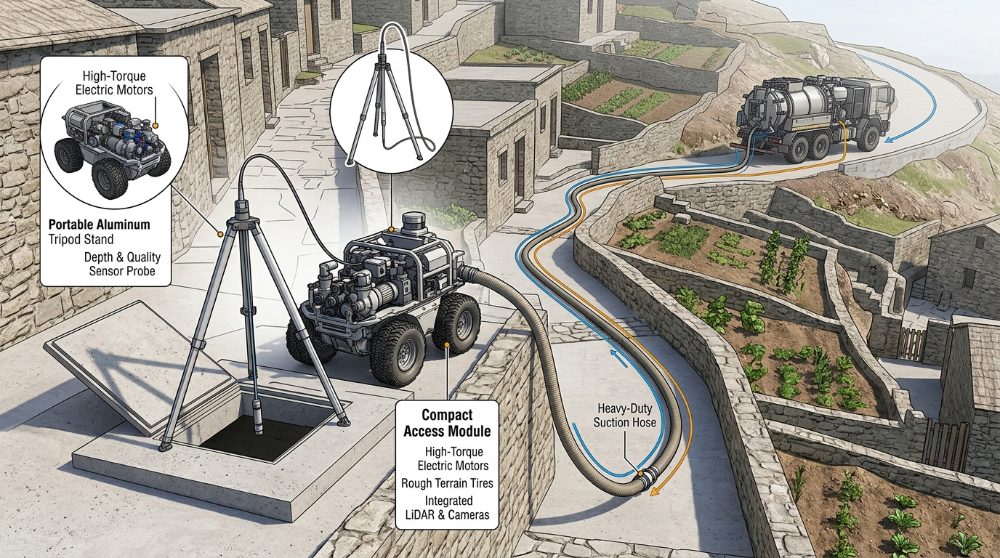

Self-Fluidizing Mother-Daughter Desludging System
A modular, remotely operated sanitation solution designed for septic tanks in hilly terrain, narrow lanes, and hard-to-reach communities.
Combining a mobile mother unit, a compact four-wheel daughter unit, self-fluidizing sludge intake, and intelligent pump control to improve access to safer mechanized desludging.

The Sanitation Access Challenge
Why conventional desludging equipment fails in high-density, steep, and unsewered settlements.
Limited Vehicle Access
Heavy trucks require 3–4 m wide roads; they cannot enter 1.2 m alleys or steep mountain paths.
Difficult Sludge Extraction
Thick, viscous sludge and depth-related head loss quickly stall standard atmospheric suction systems.
Unsafe Manual Emptying
Inaccessible pits force hazardous manual bailing, exposing workers to lethal H₂S gas and biohazards.
Environmental Contamination
Untreated manual dumping directly pollutes local streams, springs, and shallow groundwater tables.
Answer: Decouple bulk roadway storage from pit-side fluid pumping using a synchronized Mother-Daughter robotic platform.
A Two-Unit System. One Connected Operation.
The mother vehicle acts as roadway storage and transport; the compact daughter unit brings positive-displacement pumping directly to the pit mouth.
Mother-Daughter Connected Operation
“Continuous closed-circuit transfer: Positive progressive cavity pumping sends sludge directly from the pit to the roadway truck.”
A. Mother Unit (Roadway Utility Vehicle)
-
✓
Road-Level Staging: Parks on nearest accessible roadway without risking narrow alley blockages.
-
✓
Sealed Storage Tank: Payload-rated sludge container (2,000–4,000 L) for municipal treatment disposal.
-
✓
Rear Transit Deck & Tilt Ramp: Transports and safely deploys the compact daughter rover.
-
✓
Closed Top Receiving Inlet: Camlock coupling receiving sludge continuously through lay-flat hose.
B. Daughter Unit (Compact 4WD Rover)
-
✓
4WD Electric Platform: Compact footprint navigating 1.2 m alleys and unpaved grades.
-
✓
Progressive Cavity Pump: Positive-displacement rotor/stator generating constant positive discharge head.
-
✓
Proposed 200–250 L Buffer Tank: Acts as an inline hydraulic buffer; not intended to empty whole pits alone.
-
✓
Swappable 24V LiFePO₄ Battery & Remote Camera: Standoff operator control with pan-tilt navigation.
Direct Transfer Mode (Continuous Pumping)
The daughter unit pumps sludge continuously through a 50–100 m lay-flat hose directly into the mother truck's sealed tank. Empties full 2,000–3,000 L septic pits in a single continuous session.
• Minimal alley traffic during job
• 100% enclosed, pressurized transfer
Carry Mode (Shuttle Batch Transit)
Used when direct hose runs are blocked by 90-degree blind masonry corners or heavy foot traffic. The daughter unit fills its 200–250 L buffer tank and shuttles small loads back to the mother truck.
• Multiple shuttle trips required
• 200–250 L buffer capacity limit
Pump Technology: Progressive Cavity Positive-Displacement Pump
Important correction: We are NOT using a vacuum pump. The daughter unit utilizes a progressive cavity pump engineered specifically for controlled transfer of thick, viscous sludge through a discharge hose.
Progressive Cavity Positive-Displacement Pump
“Designed for controlled transfer of thick, viscous sludge through a discharge hose.”
Visualized Innovation Mechanisms
Two proprietary engineering mechanisms designed to eliminate external fluidization water and automate blockage prevention.
Self-Fluidizing Intake Mechanism
“Uses recirculated pit liquid to loosen thick sludge without a separate jet pump.”
Intelligent Pump Control
“Monitors operating conditions and adjusts pumping to help prevent blockages and dry running.”
System Architecture Schematic
Closed-circuit fluidic flow, bypass jet loop, and electro-pneumatic sensor bus. Click any block to view specifications.
Progressive Cavity Sludge Pump
Positive-Displacement Pump (Daughter Unit)Metallic helical rotor rotating inside a resilient elastomer double-helix stator.
Generates non-pulsating positive discharge pressure to push thick viscous sludge through 50–100 m lay-flat hose.
Engineering Specifications
Target design estimates versus proposed baseline components. Strictly zero fabricated performance data.
| Subsystem / Parameter | Engineering Value | Classification | Status & Rationale |
|---|---|---|---|
| Pump Architecture | Progressive Cavity (Positive Displacement) | Component Selection | Non-pulsating high-viscosity transfer; no vacuum pump. |
| Holding Tank Capacity | Proposed 200–250 L | Design Estimate | Temporary inline buffer; prevents chassis overload on gradients. |
| Drive Platform | 4WD Electric Rover Chassis | Design Target | Independent high-torque gearmotors; navigates 1.2 m narrow alleys. |
| Intake Fluidization | Rotating Jet Ring + Flexible Auger | To Be Validated | Uses in-pit supernatant bypass; avoids external fluidization water. |
| Direct-Mode Hose Reach | 50–100 m Maximum Target | Target For Testing | Target for prototype trials; unproven head loss over elevation. |
| Estimated Empty Weight | Approximately 330 kg | Provisional Estimate | Includes chassis, PC pump, empty buffer tank, battery pack. |
| Estimated Loaded Weight | Approximately 600 kg | Provisional Estimate | Calculated with 250 L full buffer tank during carry mode. |
| Estimated System Budget | ₹2,00,000 – ₹3,00,000 | Planning Allocation | Preliminary daughter unit estimate. Excludes road vehicle. |
| Power Storage | 24V Swappable LiFePO₄ Battery | Architecture Target | High thermal stability, safe cell chemistry, rapid field swaps. |
| Atmospheric Monitoring | H₂S, CH₄ (LEL), CO, O₂ Sensors | Safety Suite | Continuous atmospheric evaluation with 2-level alarms and relay cut. |
Safety by Design
Multi-tiered hazard mitigation: Gas clearance, pump dry-run interlocks, and mechanical stability.
Gas Safety Protocol
Check atmosphere from outside the pit before opening. Keep ignition sources away. Continuous H₂S/CH₄ monitoring with 2-level alarms.
Pump Protection Interlocks
Motor current, pressure, and inline flow monitoring. Instant stop on suspected dry running. Pressure relief and automated backflush.
Mechanical Safety
Rated aluminum tripod (150 kg WLL) and hoist. Automatic parking brake, wheel chocks, tilt sensor, and buffer float switch.
Two-Level Alarm & Automated Response Logic
Test the emergency response:
NORMAL OPERATION (All Sensors Green)
9-Step Operating Workflow
A closed mechanized desludging sequence designed to eliminate worker contact with faecal sludge.
Mother Staging
Park truck on nearest road, secure chocks, set hazard cones.
Daughter Unloading
Deploy rear ramp, navigate 4WD unit remotely down narrow alley.
Gas Assessment
Sample pit atmosphere from outside before touching manhole.
Position Station
Erect tripod over pit mouth; seat flexible vapor skirt flush.
Lower Probe
Lower probe assembly using hoist into supernatant layer.
Activate Jet & Pump
Engage pump bypass to direct liquid jet into bottom sludge cake.
Closed-Loop Control
Microcontroller monitors current, pressure, flow for blockages.
Hose Transfer
Transfer sludge continuously via lay-flat hose to mother truck.
Decontaminate & Close
Clean-water backflush, disinfect, secure manhole, log job.
Step 01: Mother Vehicle Roadway Staging
Park mother utility truck on nearest accessible road, set hazard cones, deploy ramp.
- ✓Park on level, stable asphalt/gravel
- ✓Deploy high-visibility safety cones
- ✓Inspect lay-flat hose couplings
Budget and Economic Sensitivity
Daughter unit planning budget: ₹2–3 Lakh (excluding road vehicle). Adjust operational parameters below to model viability.
“Bringing Mechanized Sanitation to the Places Trucks Cannot Reach.”
Our goal is to develop a practical, locally serviceable system that expands access to mechanized desludging while prioritizing worker safety and environmental protection.